1. このアプリについて
「 防災ウェブマップ」は、地域の防災マップ作りを支援するウェブアプリです。
まち歩きの中で見つけた危険箇所や防災に役立つ情報を、写真やコメントを添えて地図上に投稿し、地域のみんなで共有できます。
主な機能
- AED・消火栓・公共施設などの防災情報を地図で確認
- まち歩きで見つけた気づきを写真付きで投稿
- 他の人の投稿にいいねやコメントで反応
- 投稿を一覧表示してカテゴリ別に閲覧
推奨環境
- スマートフォンでの利用を推奨します（iPhone / Android）
- ブラウザは Safari（iPhone）または Chrome（Android）をお使いください
2. アプリへのアクセス
以下のURLからアクセスしてください。ブックマークやホーム画面に追加しておくと便利です。
3. ログイン方法
投稿やコメントなどの機能を利用するには、ログインが必要です。
はじめてのログイン
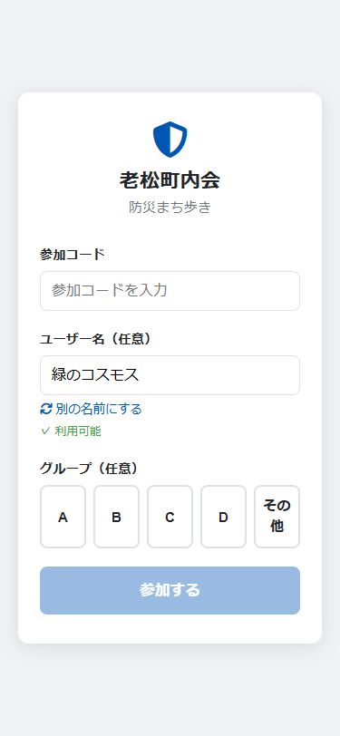
- 地図画面右下の 「ログイン」ボタン をタップします
- 参加コード を入力します（主催者から共有されます）
- ユーザー名 が自動で生成されます
- そのまま使うことも、好きな名前に変更することもできます
- 「別の名前にする」をタップすると別の名前が生成されます
- グループ（A〜D）を選びます（任意）
- 「参加する」 をタップしてログイン完了です
再ログイン
ログインセッションは 24時間 有効です。セッションが切れた場合は、参加コードを再入力するだけで同じユーザーとして再ログインできます。
4. 地図画面の見方
ログイン前でも地図の閲覧が可能です。ログインすると、画面下部にナビゲーションバーが表示され、すべての機能が使えるようになります。
ログイン前
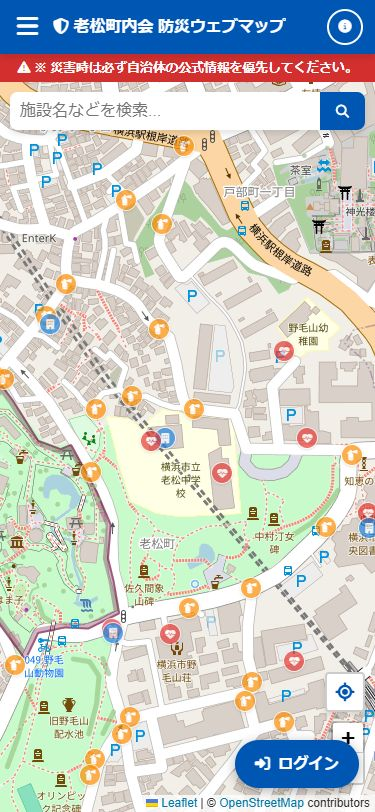
- 地図上に、AED・消火栓・公共施設などの防災情報がアイコンで表示されます
- 右下の 「ログイン」ボタン からログインできます
ログイン後
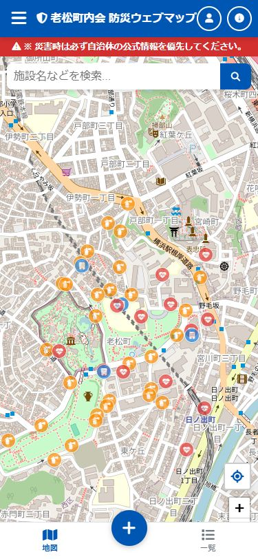
- 画面下部に ナビゲーションバー が表示されます
- 地図: 地図画面に戻る
- ＋（緑の丸ボタン）: 新しい気づきを投稿
- 一覧: 投稿の一覧を表示
- 他のユーザーの投稿がマーカーとして地図上に表示されます
地図の操作
| 操作 | 方法 |
|---|
| 移動 | 指でドラッグ（スワイプ） |
| 拡大 | ピンチアウト、または右下の ＋ ボタン |
| 縮小 | ピンチイン、または右下の − ボタン |
| 現在位置 | 右下の 位置情報ボタン（十字マーク）をタップ |
情報パネル
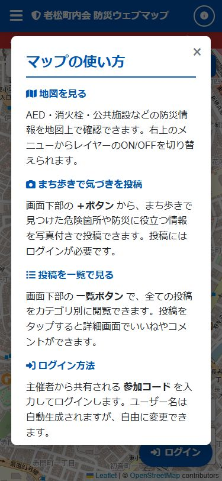
ヘッダー右の (i) ボタン をタップすると、アプリの使い方や連絡先情報が表示されます。
5. レイヤーの切り替え
ヘッダー左の メニューボタン（三本線） をタップすると、サイドパネルが開きます。
防災レイヤー
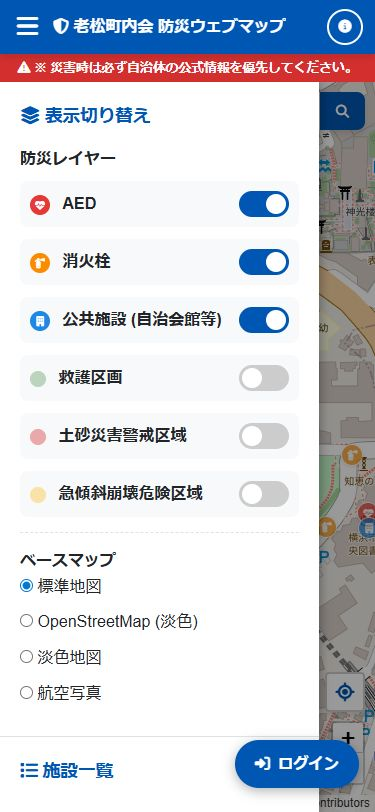
スイッチをタップして、各レイヤーの表示/非表示を切り替えられます。
| レイヤー | 内容 |
|---|
| AED | AED設置箇所の位置 |
| 消火栓 | 地域の消火栓の位置 |
| 公共施設（自治会館等） | 公共施設の位置 |
| 救護区画 | 救護区画の範囲（初期はOFF） |
| 土砂災害警戒区域 | 土砂災害警戒区域（初期はOFF） |
| 急傾斜崩壊危険区域 | 急傾斜崩壊危険区域（初期はOFF） |
気づき投稿レイヤー（ログイン後）
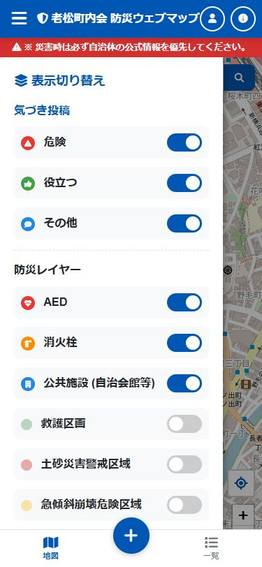
ログインすると、投稿のカテゴリ別に表示を切り替えられます。
- 危険: 危険箇所の投稿
- 役立つ: 防災に役立つ情報の投稿
- その他: その他の投稿
ベースマップの変更
サイドパネル下部で、地図の背景を切り替えられます。
- 標準地図: OpenStreetMap の標準地図
- OpenStreetMap（淡色）: 見やすい淡色デザイン
- 淡色地図: 国土地理院の淡色地図
- 航空写真: 航空写真
6. 気づきを投稿する
まち歩きで気づいたことを投稿する手順です。画面下部の ＋ボタン（緑の丸ボタン）をタップして投稿画面を開きます。
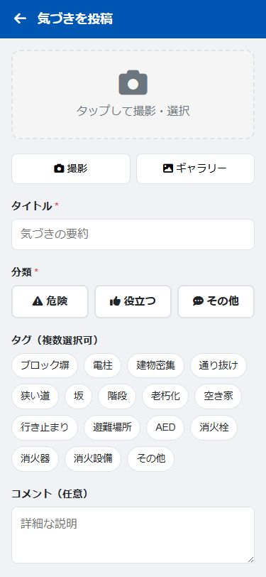
写真（任意）
- 「撮影」ボタン: カメラを起動してその場で撮影
- 「ギャラリー」ボタン: 端末に保存されている写真から選択
- 撮影・選択した写真は右上の × で削除できます
タイトル（必須）
気づきの内容を簡潔にまとめて入力します。
分類（必須）
投稿内容に合った分類を1つ選びます。
| 分類 | 用途 |
|---|
| 危険 | 危険な箇所（ブロック塀、狭い道など） |
| 役立つ | 防災に役立つ情報（避難場所、AEDなど） |
| その他 | 上記以外の気づき |
タグ（任意・複数選択可）
該当するタグをタップして選択します。「その他」を選ぶと自由入力もできます。
コメント（任意）
詳細な説明を入力できます。
位置
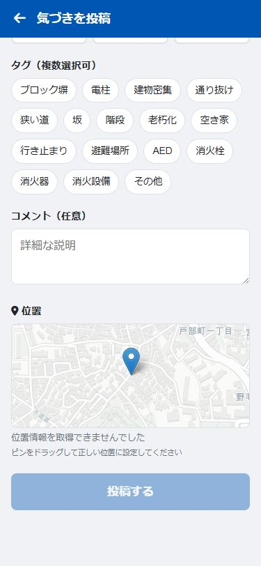
- GPSで現在位置が自動的に取得されます
- 地図上の ピン（マーカー）をドラッグ して、正確な位置に調整できます
投稿する
すべての必須項目（タイトル・分類）を入力すると、「投稿する」ボタン が押せるようになります。タップして投稿を送信します。
7. 投稿を見る（一覧・詳細）
一覧画面
画面下部のナビゲーションバーの 「一覧」 をタップすると、投稿の一覧が表示されます。
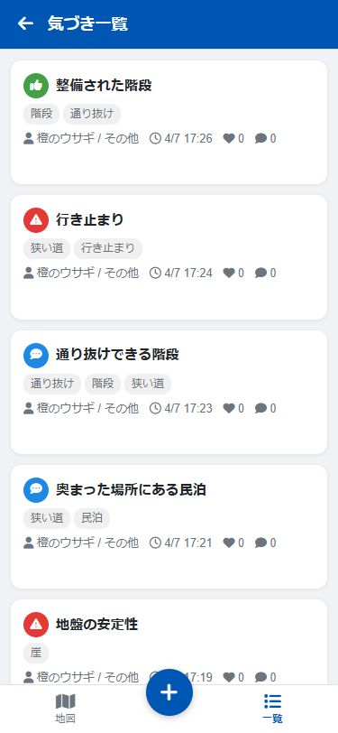
- 最新の投稿が上に表示されます
- 写真がある投稿にはサムネイルが表示されます
- 各カードには、投稿者名・投稿日時・いいね数・コメント数が表示されます
カテゴリフィルター
画面上部のタブで投稿を絞り込めます。
- 全て: すべての投稿
- 危険: 危険カテゴリの投稿のみ
- 役立つ: 役立つカテゴリの投稿のみ
- その他: その他カテゴリの投稿のみ
詳細画面
一覧画面で投稿カードをタップすると、詳細画面が開きます。
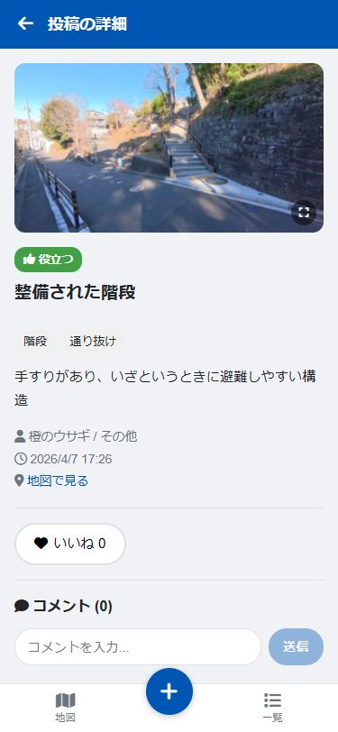
- 投稿のタイトル・カテゴリ・タグ・コメントが表示されます
- 写真がある場合はタップして拡大表示できます
- 「地図で見る」 をタップすると、地図上でその投稿の位置を確認できます
8. いいね・コメント
投稿の詳細画面から、いいねやコメントができます。
いいね
- 「いいね」ボタン をタップすると、いいねが付きます
- もう一度タップすると、いいねを取り消せます
- いいねした人の名前が表示されます
コメント
- 詳細画面の下部にある 入力欄 にコメントを入力します
- 「送信」ボタン をタップしてコメントを投稿します
9. プロフィール・ログアウト
ヘッダー右の 人型アイコン をタップすると、プロフィール画面が表示されます。
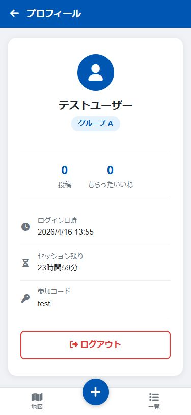
プロフィール画面では以下の情報を確認できます。
- ユーザー名・グループ
- 投稿数・もらったいいね数
- ログイン日時・セッション残り時間
ログアウト
プロフィール画面下部の 「ログアウト」ボタン をタップするとログアウトできます。再度利用する際は参加コードを入力して再ログインしてください。
10. ご利用にあたっての注意事項
参加コードの取り扱い
- 参加コードは 関係者以外に共有しないでください
- 参加コードを知っている人は、誰でもログインして投稿やコメントができます
投稿内容について
- 投稿した情報は、ログインしている関係者全員に公開されます
- 人の家の室内など、公道から通常見えない範囲は撮影しないでください
- 写り込む人について、町内で共有して問題ないか配慮してください。明確に個人が特定できる形で写り込む場合は、本人の同意を得るか撮り直しをお願いします
- 投稿内容が 特定の個人や建物への誹謗中傷にならないよう注意してください
- 防災の観点から客観的な情報として記載し、建設的なコメントを心がけてください
データの保存と管理
- 投稿データ（テキスト・写真）はクラウド上に保存されます
- 投稿にはセンシティブな情報（建物の老朽化状況、避難経路の弱点など）が含まれる場合があります。これらの情報の取り扱いには十分ご注意ください
- 投稿の削除はユーザー自身ではできません。誤って投稿した場合や、問題のある投稿を見つけた場合は、 までご連絡ください
システムの制約
- このアプリは、少人数での利用を前提とした簡易的なシステムです
- 大人数での同時利用や高頻度のアクセスには対応していません
- 通信状態が不安定な場所では、投稿やデータの読み込みに時間がかかる場合があります
災害時の利用について
災害時は、自治体の公式情報（避難指示等）を必ず優先してください。
このアプリは防災マップ作りの支援ツールであり、災害時のリアルタイム情報提供を目的としたものではありません。
お問い合わせ
ご不明な点やお困りのことがありましたら、 までご連絡ください。